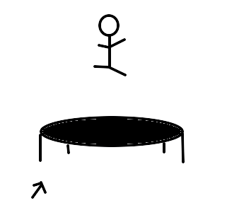
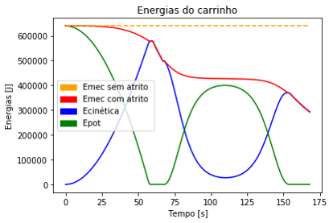

Cama Elástica - 1° Semestre (2017.1)
Modelagem e Simulação do Mundo Físico - Professor Fábio H.
Proposta:
O foco do último projeto desta matéria foi a modelagem de sistemas mecânicos – “mecânicos” no sentido comumente utilizado na física, ou seja, o estudo do movimento de corpos macroscópicos. Mais uma vez, o modelo seria utilizado para algum tipo de análise (ou seja, para responder a uma pergunta explicativa, preditiva ou de parametrização do sistema escolhido). Ao final, seria realizada uma apresentação em slides ou em cartaz.
Objetivos:
O objetivo do projeto que foi apresentado no primeiro semestre foi modelar os possíveisa saltos realizados por um homem pulando de um prédio para o outro usando uma cama elástica
Conteúdo trabalhado:
- 2° Lei de Newton
- Arrasto Aerodinâmico
- Diagrama de Corpo Livre → Somas Vetoriais
- Cálculo Diferencial → equações diferenciais de segunda ordem
- Sistema de coordenadas: Espaço percorrido
- Velocidade e Aceleração como taxas de variação do espaço
- Prática de implementação de modelos equacionados em Python → simulação temporal
Resultados:
A partir do resultados obtidos, foi possível analisar que os ângulos de entrada do homem na cama elástica influenciam diretamente no quão distante o homem vai, já a variação da altura da queda influencia na altura máxima que o mesmo irá alcançar.
Mais projetos de modelagem